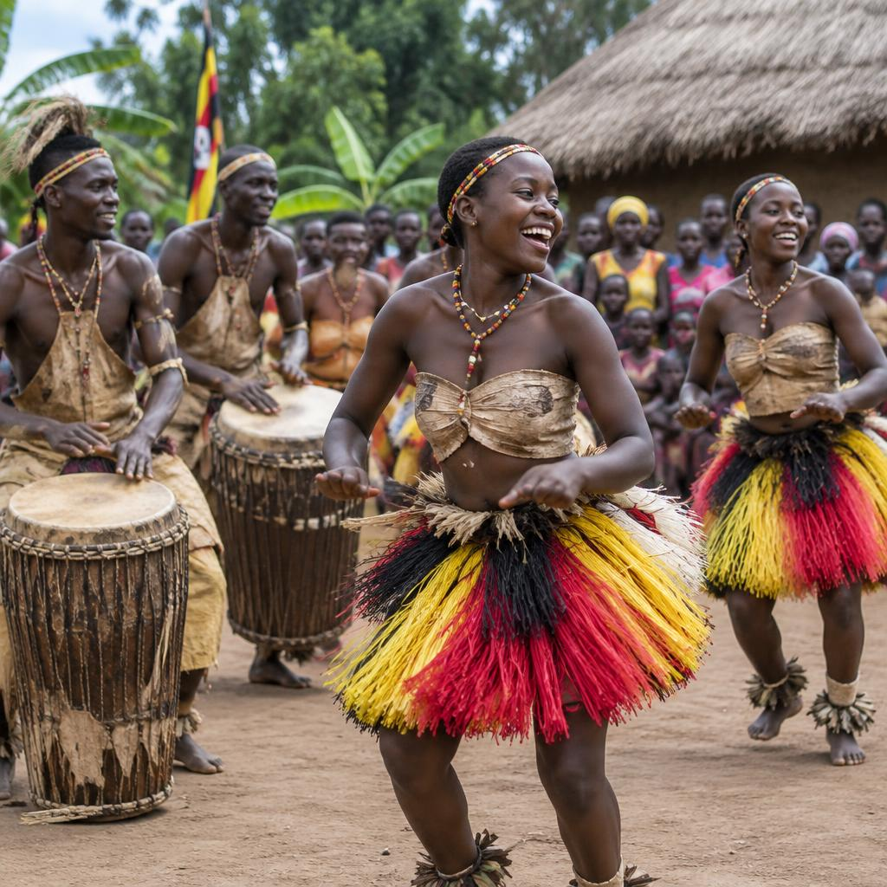
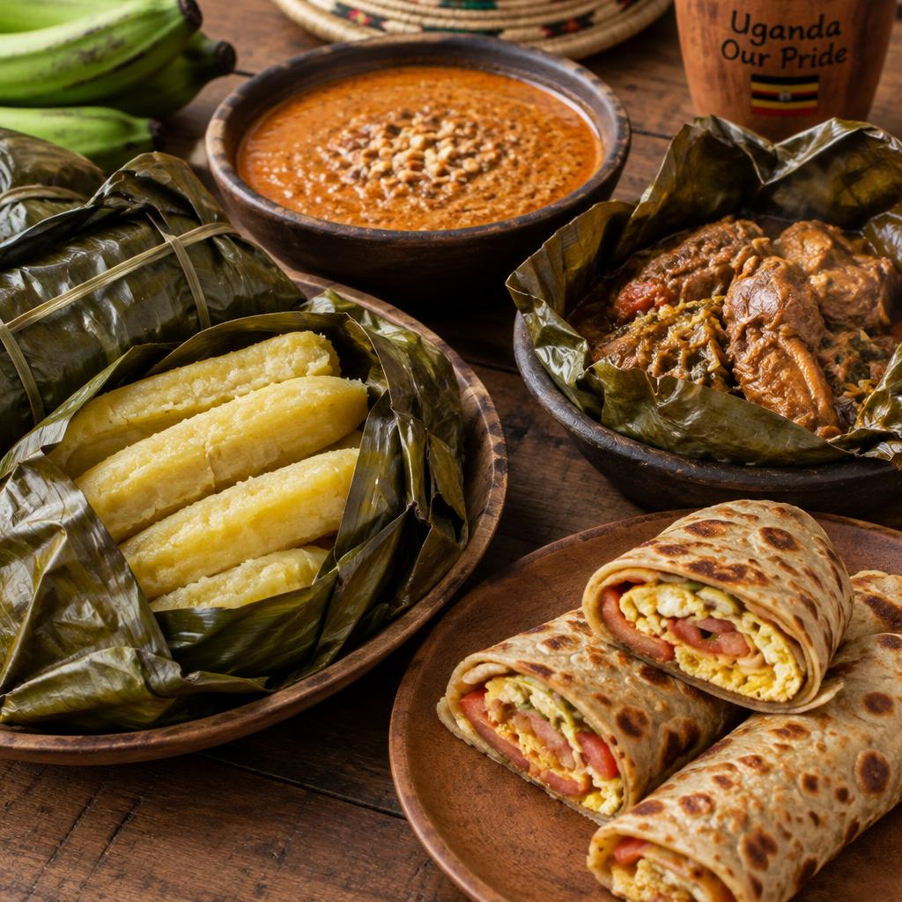

Traditional Kingdoms
Uganda has several traditional kingdoms that remain important cultural institutions today:
- Buganda – led by the Kabaka; the largest kingdom, in central Uganda.
- Bunyoro-Kitara – led by the Omukama; one of the oldest kingdoms.
- Tooro – led by the Omukama, based in Fort Portal.
- Busoga – led by the Kyabazinga, in eastern Uganda.
- Rwenzururu – led by the Omusinga, in the Rwenzori region.

Dance, Dress, Music and Ceremony
Traditional Dances
Bakisimba (Buganda), Ekitaguriro (Ankole), Larakaraka (Acholi), Imbalu dance (Bagisu) and Runyege (Bunyoro/Tooro).
Traditional Clothing
The gomesi for women and kanzu for men are worn at ceremonies. Bark cloth (olubugo) is recognised by UNESCO.
Cultural Ceremonies
Kwanjula (introduction ceremony), Imbalu circumcision of the Bagisu, and royal coronation anniversaries.
Music and Instruments
Engoma (drums), Adungu (bow harp), Endingidi (tube fiddle), Akogo (thumb piano) and Amadinda (xylophone).
Languages
English and Swahili are official languages. Luganda, Runyankore, Luo, Ateso, Lusoga and many more are widely spoken.
Heritage Sites
Kasubi Tombs, Bigo bya Mugenyi earthworks, Nyero rock paintings and the Uganda Museum.
Traditional Foods
Ugandan food is fresh, filling and full of flavour. Try these favourites:
- Matooke – steamed green bananas, a staple in central and western Uganda.
- Luwombo – chicken, beef or groundnut stew steamed in banana leaves.
- Rolex – a popular street snack of eggs rolled in a chapati.
- Malakwang – a sour leafy vegetable dish from the Acholi people.
- Millet bread (Kalo) – enjoyed across northern and western Uganda.
